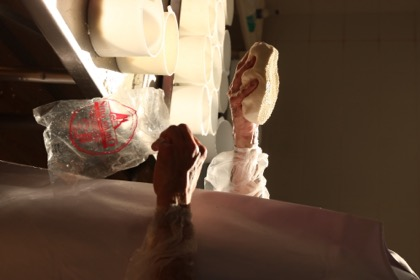
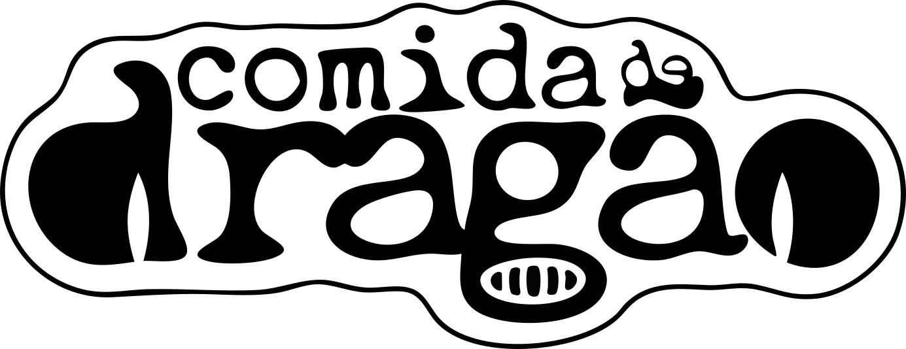
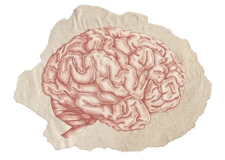
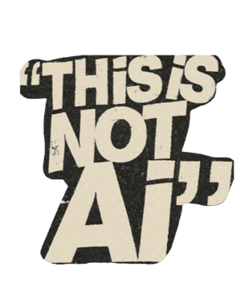

I'm marketing something with no category yet.
Comida de Dragão is a dog food made from insects, from the first insect biofactory in Rio de Janeiro. No competitor to copy. No benchmark to beat. Nobody out there searching for the product. I lead the marketing.
The method is always the same. Look at the thing and say what it is actually doing — not what it was meant to do. Find the people it is already for. Build the demand, because there is none to capture. Then measure what moved.
That habit comes from being an artist. Mentorship with artists and curators is training in criticism: you learn to stand in front of a work and say what it does, where it fails, and what it could become. A brand answers to the same questions.
I write the code it runs on — the landing pages, the dashboards, the agents that read the numbers each morning. A decision never waits in a queue.
If any of that made you curious, keep going.
 sítio solidão
sítio solidão
 as lacaune
as lacaune

a queijaria eu
eu
 cerâmica
cerâmica
 as bananas
as bananas
 comida de dragão
comida de dragão
 as páginas
o compilado
dashboard
as páginas
o compilado
dashboarddo sítio revelador


